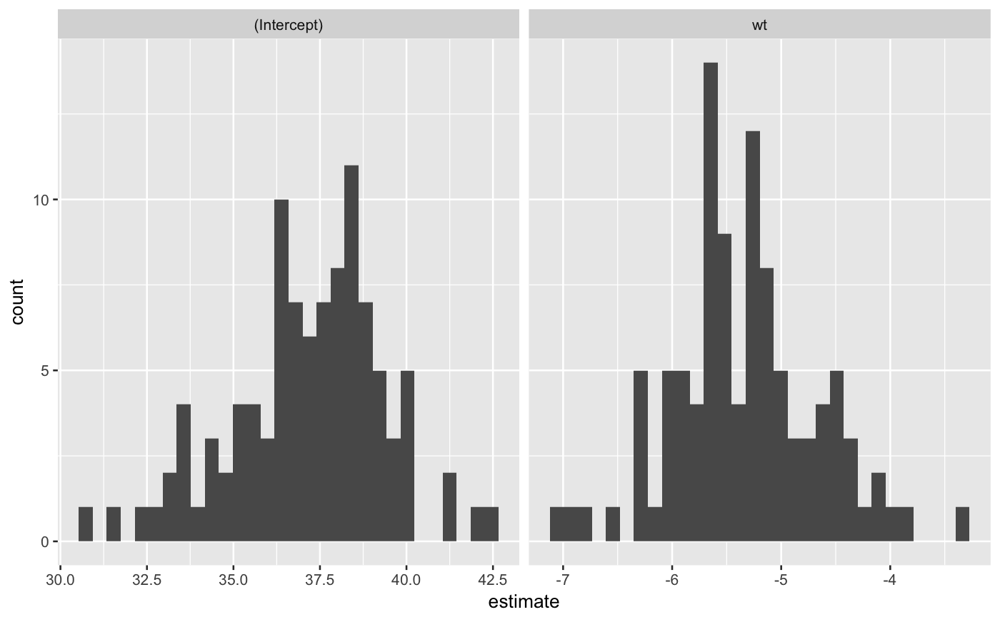

Generate bootstrap replicates. In addition to the ordinary bootstrap,
it supports weighted bootstrap (weights),
Bayesian bootstrap (bayes), cluster bootstrap (if data is a
grouped data frame and groups = TRUE), and stratified bootstrap
(if data is grouped data frame and stratify = TRUE).
bootstrap(expr, R = 1L, weights = NULL, bayesian = FALSE, size = NULL, frac = 1, replace = TRUE, n = NULL, extractor = NULL) bootstrap_n(n, R = 1L, weights = NULL, bayesian = FALSE, size = NULL, frac = NULL, replace = TRUE)
| expr | An expression for the data to be sampled. This does not need to be a data frame, as |
|---|---|
| R | Number of replicates to sample |
| weights | Observation level weights to use for a weighted bootstrap. If |
| bayesian | If |
| size | Number of observations to sample in each replicate. Set |
| frac | Proportion of observations to sample in each replicates. This can be set to values |
| replace | Logical scalar. If |
| n | A non-negative scalar integer representing the number of elements to sample from. If |
| extractor | A function or object coercible to a function by |
data frame (tibble) with R rows and the following columns.
A list column with objects representing the training sets. For bootstrap, the elements are vectors of the indexes; for bootstrap_n, the elements are lazy_sample objects.
Angelo Canty and Brian Ripley (2016). boot: Bootstrap R (S-Plus) Functions. R package version 1.3-18.
Davison, A. C. & Hinkley, D. V. (1997) Bootstrap Methods and Their Applications. Cambridge University Press, Cambridge. ISBN 0-521-57391-2
The boot function boot which is the
canonical R bootstrap implementation.
The modelr function bootstrap also implements a lazy bootstrap.
library("purrr") library("dplyr") library("ggplot2") boot <- bootstrap(mtcars, 100) models <- map(boot$sample, ~ lm(mpg ~ wt, data = .$sample)) tidied <- map_df(models, broom::tidy, .id = "id") ggplot(tidied, aes(x = estimate)) + geom_histogram() + facet_wrap(~ term, scales = "free_x")#># bootstrap_n requires only a number of elements bootstrap_n(20, 10)#> # A tibble: 10 x 1 #> sample #> <list> #> 1 <int [1]> #> 2 <int [1]> #> 3 <int [1]> #> 4 <int [1]> #> 5 <int [1]> #> 6 <int [1]> #> 7 <int [1]> #> 8 <int [1]> #> 9 <int [1]> #> 10 <int [1]># Specify weights for a weighted bootstrap bootstrap(mtcars, 10, weights = runif(nrow(mtcars)))#> # A tibble: 10 x 1 #> sample #> <list> #> 1 <lazy_sample> #> 2 <lazy_sample> #> 3 <lazy_sample> #> 4 <lazy_sample> #> 5 <lazy_sample> #> 6 <lazy_sample> #> 7 <lazy_sample> #> 8 <lazy_sample> #> 9 <lazy_sample> #> 10 <lazy_sample># A Bayesian bootstrap bootstrap(mtcars, 10, bayesian = TRUE)#> # A tibble: 10 x 1 #> sample #> <list> #> 1 <lazy_sample> #> 2 <lazy_sample> #> 3 <lazy_sample> #> 4 <lazy_sample> #> 5 <lazy_sample> #> 6 <lazy_sample> #> 7 <lazy_sample> #> 8 <lazy_sample> #> 9 <lazy_sample> #> 10 <lazy_sample># Subsample subsets of size 5 without replacement bootstrap(mtcars, 10, size = 5, replace = FALSE)#> # A tibble: 10 x 1 #> sample #> <list> #> 1 <lazy_sample> #> 2 <lazy_sample> #> 3 <lazy_sample> #> 4 <lazy_sample> #> 5 <lazy_sample> #> 6 <lazy_sample> #> 7 <lazy_sample> #> 8 <lazy_sample> #> 9 <lazy_sample> #> 10 <lazy_sample># Subsample subsets of 25% without replacement bootstrap(mtcars, 10, frac = 0.25, replace = FALSE)#> # A tibble: 10 x 1 #> sample #> <list> #> 1 <lazy_sample> #> 2 <lazy_sample> #> 3 <lazy_sample> #> 4 <lazy_sample> #> 5 <lazy_sample> #> 6 <lazy_sample> #> 7 <lazy_sample> #> 8 <lazy_sample> #> 9 <lazy_sample> #> 10 <lazy_sample>